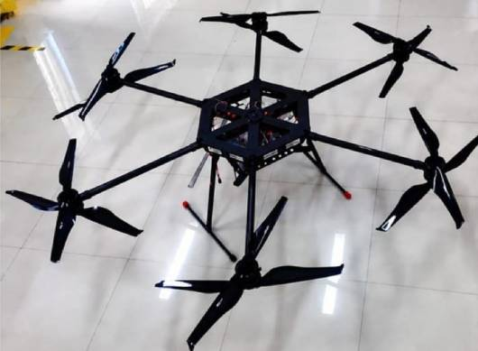

Dual Hexa 35.5
Designed with a dual coaxial hexa-rotor architecture, the Dual Hexa 35.5 provides superior lifting capability and long-endurance performance. Built for demanding autonomous missions, it carries heavy payloads with precision while operating on EIL's intelligent autonomous flight control platform, ensuring stability, safety, and mission success.
Range10 km
Endurance40–60 min
Max Speed15 m/s